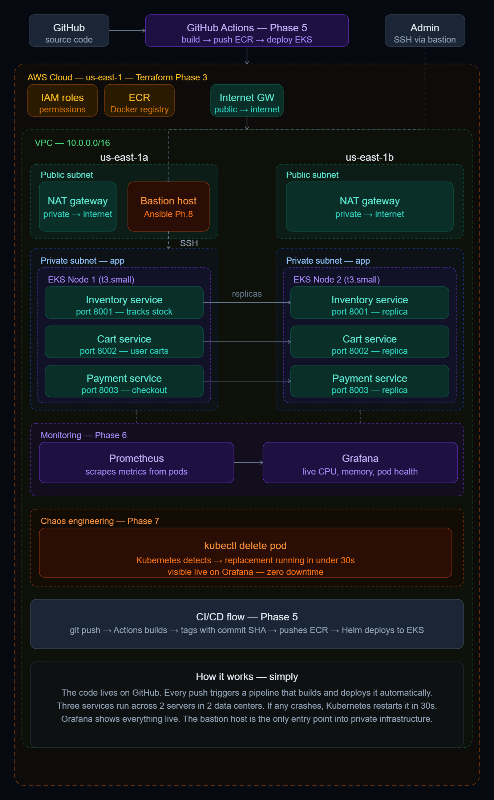
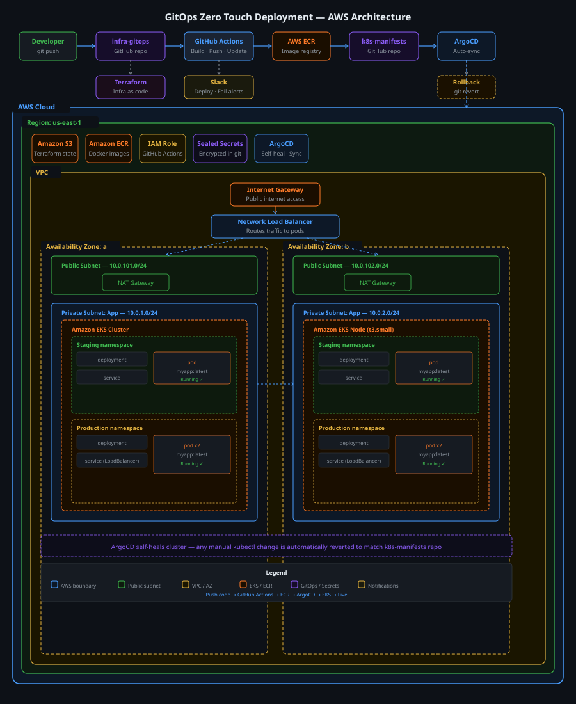
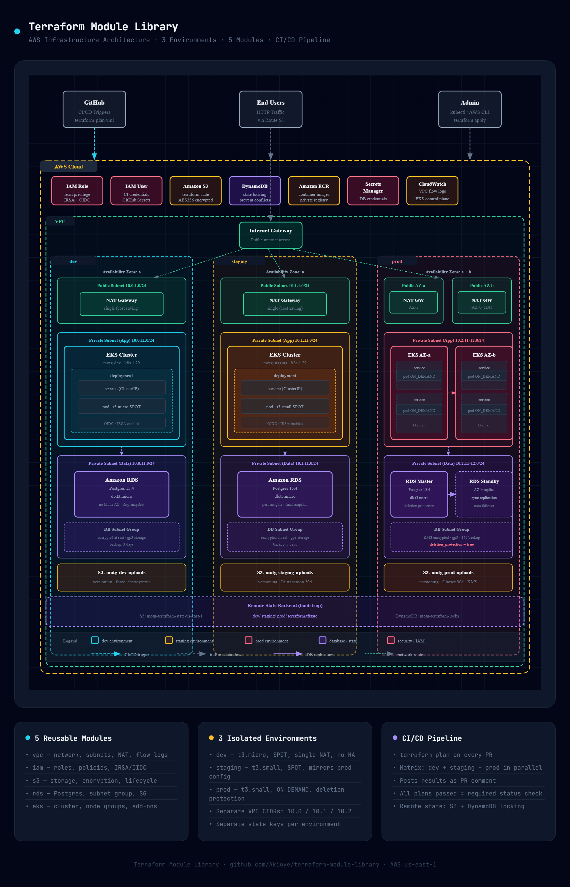

AWS Certified Cloud & DevOps Engineer with 4 years of experience across enterprise pharmacy infrastructure. I ship production-grade platforms on EKS, automate everything with Terraform and GitHub Actions, and build GitOps pipelines where pushing code is the only manual step.
Three end-to-end builds on AWS. Real infrastructure, real errors, real fixes. Every repo has a full audit trail.



Every tool below has been used in a real project build, not just listed for appearances.
AWS certified across three tracks. SysOps in progress.
I'm a Cloud and DevOps Engineer with 4 years of professional experience across Walgreens and CVS Pharmacy — working on enterprise-scale cloud infrastructure, CI/CD pipelines, and AWS architecture.
I hold a BS in Computer Science from Covenant University and I am completing a BS in Cloud Computing at UMGC. Outside engineering, I founded and operate Mechanic On The Go, a mobile automotive services business. Running it reinforced a lesson I bring into cloud engineering: infrastructure exists to make real-world operations more reliable, not simply to demonstrate technical complexity.
I build systems that are automated, observable, and self-healing. Every project I ship is production-grade, documented, and designed to solve a real problem.
If you're building something that needs infrastructure that scales, heals itself, and never sleeps, let's talk.